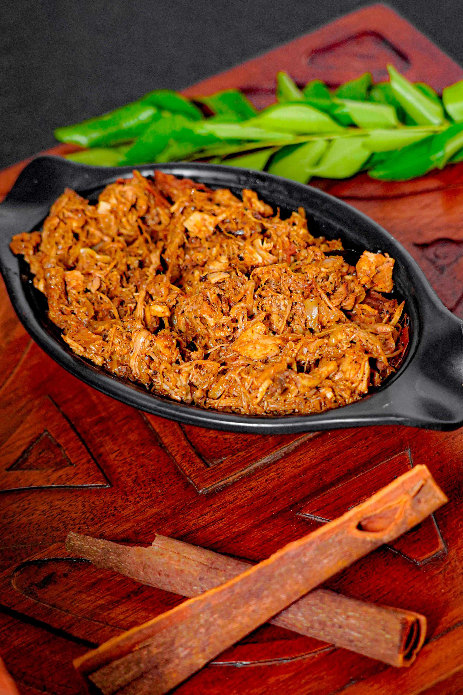

Kalua Pork

Kalua Pig in a Slow Cooker
This kalua pork recipe uses the slow cooker for a simple way of making traditional Hawaiian kalua pig without having to dig a hole in your backyard!
Ingredients
- 1 (6 pound) pork butt roast
- 1 ½ tablespoons Hawaiian sea salt
- 1 tablespoon liquid smoke flavoring
Steps
- Gather all ingredients.
- Pierce pork all over with a carving fork; rub in salt then liquid smoke. Transfer pork into a slow cooker.
- Cover, and cook on Low for 16 to 20 hours, turning once during cooking time.
- Remove pork from slow cooker; shred with two forks, adding drippings as needed to moisten.